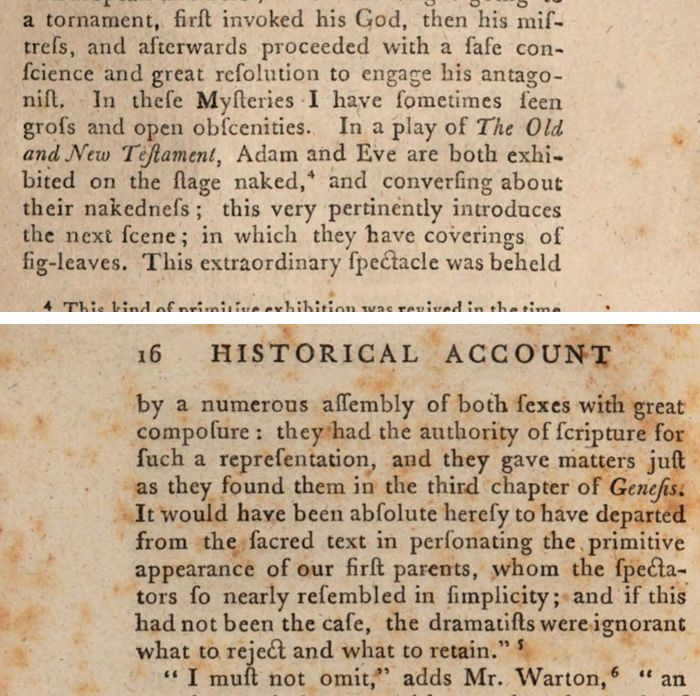

“Adam and Eve are both exhibited on the stage naked” (pp. 15–16)
English: p. 15 (scan) and p. 16 (scan). Long s modernised. Highlighted: what Lecky reports.

… In these Mysteries I have sometimes seen gross and open obscenities. In a play of The Old and New Testament, Adam and Eve are both exhibited on the stage naked, and conversing about their nakedness; this very pertinently introduces the next scene; in which they have coverings of fig-leaves. This extraordinary spectacle was beheld by a numerous assembly of both sexes with great composure: they had the authority of scripture for such a representation, and they gave matters just as they found them in the third chapter of Genesis. It would have been absolute heresy to have departed from the sacred text in personating the primitive appearance of our first parents, whom the spectators so nearly resembled in simplicity; and if this had not been the case, the dramatists were ignorant what to reject and what to retain.
[Malone’s footnote:] This kind of primitive exhibition was revived in the time of King James the First, several persons appearing almost entirely naked in a pastoral exhibited at Oxford before the King and Queen, and the ladies who attended her. It is, if I recollect right, described by Winwood.
The quotation closes with a reference to “Warton’s History of English Poetry, Vol. I. pp. 242, &c.”
The Chester plays, guild by guild (p. 11, note)
English: p. 11, footnote, scan. Not cited by Lecky; given here because it shows how the mysteries were staged.
“Exhibited at Chester in the year 1327, at the expense of the different trading companies of that city. The Fall of Lucifer, by the Tanners. The Creation, by the Drapers. The Deluge, by the Dyers. Abraham, Melchisedech, and Lot, by the Barbers. … The Shepherds feeding their Flocks by Night, by the Painters and Glaziers. The three Kings, by the Vintners. … The last Supper, by the Bakers. … Descent into Hell, by the Cooks and Innkeepers. The Resurrection, by the Skinners. The Ascension, by the Taylors. … Antichrist, by the Clothiers. Day of Judgement, by the Websters.” The reader will perhaps smile at some of these combinations. This is the substance and order of the former part of the play. God enters creating the world: he breathes life into Adam, leads him into Paradise, and opens his side while sleeping. Adam and Eve appear naked, and not ashamed, and the old serpent enters lamenting his fall. He converses with Eve. She eats of the forbidden fruit, and gives part to Adam. They purpose, according to the stage-direction, to make themselves subligacula a foliis quibus tegamus pudenda [aprons of leaves to cover our shame]. Cover their nakedness with leaves, and converse with God. God’s curse. The serpent exit hissing. They are driven from Paradise by four angels and the cherubim with a flaming sword. Adam appears digging the ground, and Eve spinning.
Backlinks
Every place in Rationalism in Europe that links to this page (generated automatically when the site is built).
- Chapter VI: note 120